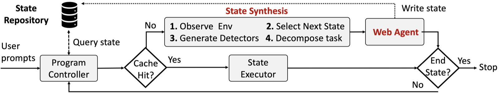

NeurIPS 2025 · ML4Sys
NetGent: compile a browser task once, replay it forever
An agent framework that automates complex web workflows to generate realistic network traffic datasets. Agents explore a task once, the result compiles into a state machine, and replays run without calling the model.
My part Built the framework and validated it on 50+ workflows, cutting the projected LLM cost of a million-run collection from $98,000 to under $10 a year.